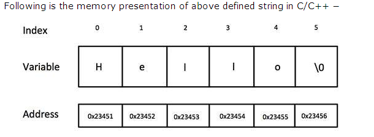

STRINGS In C++ Programming
Strings in Cpp
C++ provides following two types of string representations
- The C-style character string.
- The string class type introduced with Standard C++.
1.The C-Style Character String
The C-style character string originated within the C language and continues to be supported within C++. This string is actually a one-dimensional array of characters which is terminated by a null character '\0'. Thus a null-terminated string contains the characters that comprise the string followed by a null.
The following declaration and initialization create a string consisting of the word "Hello". To hold the null character at the end of the array, the size of the character array containing the string is one more than the number of characters in the word "Hello.
| char greeting[6] = {'H', 'e', 'l', 'l', 'o', '\0'}; |
If you follow the rule of array initialization, then you can write the above statement as follows char greeting[] = "Hello";
Actually, you do not place the null character at the end of a string constant. The C++ compiler automatically places the '\0' at the end of the string when it initializes the array. Let us try to print above-mentioned string
#include <iostream>
using namespace std;
int main () {
char greeting[6] = {'H', 'e', 'l', 'l', 'o', '\0'};
cout << "Greeting message: ";
cout << greeting <<borde endl;
return 0;
} |
When the above code is compiled and executed, it produces the following result
| Greeting message: Hello |
C++ supports a wide range of functions that manipulate null-terminated strings
| sr.no | Function & Purpose |
|---|---|
| 1 | strcpy(s1, s2); Copies string s2 into string s1. |
| 2 | strcat(s1, s2); Concatenates string s2 onto the end of string s1. |
| 3 | strlen(s1); Returns the length of string s1. |
| 4 | strcmp(s1, s2);Returns 0 if s1 and s2 are the same; less than 0 if s1 |
| 5 | strchr(s1, ch); Returns a pointer to the first occurrence of character ch in string s1. |
| 6 | strstr(s1, s2); Returns a pointer to the first occurrence of string s2 in string s1. |
Following example makes use of few of the above-mentioned functions
#include <iostream>
#include <cstring>
using namespace std;
int main () {
char str1[10] = "Hello";
char str2[10] = "World";
char str3[10];
int len ;
// copy str1 into str3
strcpy( str3, str1);
cout << "strcpy( str3, str1) : " << str3 << endl;
// concatenates str1 and str2
strcat( str1, str2);
cout << "strcat( str1, str2): " << str1 << endl;
// total lenghth of str1 after concatenation
len = strlen(str1);
cout << "strlen(str1) : " << len << endl;
return 0;
} |
When the above code is compiled and executed, it produces result something as follows
strcpy( str3, str1) : Hello strcat( str1, str2): HelloWorld strlen(str1) : 10 |
The String Class in C++:
The standard C++ library provides a string class type that supports all the operations mentioned above, additionally much more functionality.
Let us check the following example.
#include <iostream>
#include <string>
using namespace std;
int main () {
string str1 = "Hello";
string str2 = "World";
string str3;
int len ;
// copy str1 into str3
str3 = str1;
cout << "str3 : " << str3 << endl;
// concatenates str1 and str2
str3 = str1 + str2;
cout << "str1 + str2 : " << str3 << endl;
// total length of str3 after concatenation
len = str3.size();
cout << "str3.size() : " << len << endl;
return 0;
} |
When the above code is compiled and executed, it produces result something as follows
str3 : Hello str1 + str2 : HelloWorld str3.size() : 10 |